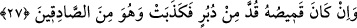
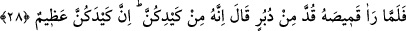

uyûn’da böyle geçmektedir.
“Eğer Yûsuf ’un gömleği önden yırtılmışsa” Burada ‘söyledi’ fiilinin var olduğu
kastedilerek bu şart ifadesi kullanılmıştır. Sanki şöyle denmiş oluyor: ‘Kadının
ailesinden bir şahit de şahitlik etti ve şöyle söyledi: ‘Eğer Yûsuf’un gömleği...’
Bu ifadenin mânâsı: “Eğer gömleğin önden yırtılmış olduğu bilinirse...” şeklindedir.
Dolayısıyla şart cümlesi lafız açısından geçmiş zaman ise de neticede geniş zaman
mânâsı ifade etmektedir.
Eğer: “Şeriat ıstılahına göre şahitlik, ‘şâhidlik ederim ki…’ ifadesiyle bir kişinin
başka biri üzerinde hakkı bulunduğunu haber vermekten ibâret olduğu halde şarta
bağlanarak söylenen bu söze nasıl şâhidlik denilebilir?” dersen, buna şöyle cevap
veririm: Bundaki şartlı ifade Yûsuf’un doğruluğunu Züleyhâ’nın söylediklerinin de
asılsız olduğunu isbat ettiğinden şahitlik yerine geçmiş ve onun görevini icra etmiştir.
“kadın doğru söylemiştir” Züleyhâ söylediklerinde hiç şüphesiz doğrudur, “o ise”
sözünde “yalancılardandır.” Çünkü Züleyhâ’yı istediği zaman, Züleyhâ kendisini
üzerinden itmiş ve iterken gömleği önden yırtılmıştır. Yahut da Züleyhâ’yı yakalamak
için arkasından koşarken ayağı kendi elbisesinin eteğine dolanarak sürçmüş ve
elbisenin yakası yırtılmıştır.
27.
“Eğer
gömleği
arkadan
yırtılmışsa,
kadın
yalancıdır,
o
doğru
söyleyenlerdendir.”
“Eğer gömleği arkadan yırtılmışsa, kadın” söylediklerinde “yalancıdır, o doğru
söyleyenlerdendir.” Çünkü bu, kadının onun peşinden gidip elbisesini çekerek yırttığını
gösterir.
28. (Kadının kocası Yûsuf’un gömleğinin) arkadan yırtılmış olduğunu görünce
(kadına): “Şüphesiz bu, sizin tuzağınızdır. Sizin tuzağınız gerçekten büyüktür.”
dedi.
Kadının kocası Aziz, Yûsuf’un gömleğinin “arkadan yırtılmış olduğunu” dolayısıyla
da Yûsuf’un suçsuz ve doğru olduğunu “görünce” kadına: “Şüphesiz bu,” yani
üzerinde anlaşmaya düşülen şu iş “sizin tuzağınızdır.” Ey kadınlar! Bu, sizden
başkasının değil, sizin hîle ve tuzaklarınız cinsindendir.
Nitekim Câmî şöyle anlatır: